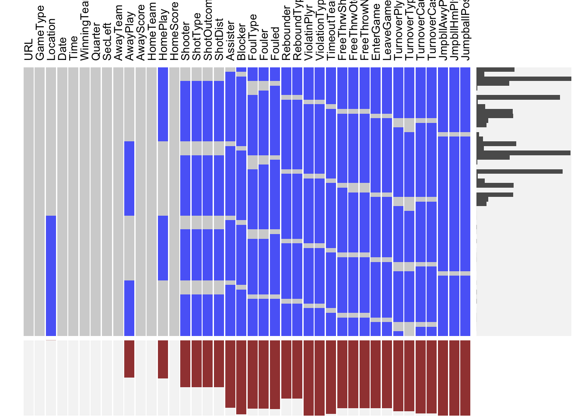

Chapter 4 Missing values

As has already been mentioned, in the original dataset rows represent events that happen. Since events are mutually exclusive the non-occurring events in a row are represented by NA. In our case, NA is information rather than a lack thereof. However, this creates the problem of finding actual missing values represented by NA. One way to combat this is to find NA values where they are not expected to be. Overall, looking at the visna plot we do not see any NA’s where there should not be. We will focus on the variables that will be of use to us. When there is a missing value with AwayPlay there is a filled value for HomePlay and vice versa. There does not appear to be a case where neither variable is filled which would be an indication of a true missing value since one of the teams must make a play. In terms of event variables, we see that shooting variables are the most common and contain the least NA’s which makes sense since shots are the most common events so those cells should be filled most frequently. Additionally, we see that rebound variables are second most common and turnovers third which is consistent with conventional wisdom. The other variables of interest like Date show no missing values. The row missing patterns are difficult to interpret since there are so many different patterns caused by the prevalence of informational NA’s.